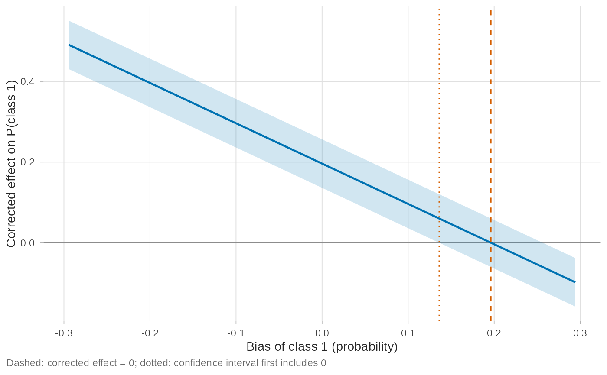

Sensitivity of treatment effects on latent classes to unmeasured confounding
intervene_membership_sensitivity.RdAdditive bias analysis and E-values for intervene_membership(): with unmeasured confounding the
estimate of \(\Delta_k\) converges to \(\Delta_k + b_k\) (probability units,
\(\sum_k b_k = 0\)). Reports corrected effects for a supplied bias vector, the
tipping biases at which \(\Delta_k\) vanishes or its interval first includes 0, a
sensitivity curve for one class, and E-values (VanderWeele & Ding 2017) for the risk
ratios \(P(C(1) = k) / P(C(0) = k)\).
Usage
intervene_membership_sensitivity(
model,
data,
treatment,
confounders = NULL,
bias = NULL,
target = 1,
grid = NULL,
level = 0.95,
estimator = c("aipw", "ipw_bch", "aipw_posterior"),
propensity_model = "linear",
outcome_model = "linear",
folds = 5,
trim = 0,
seed = 1,
learners = NULL,
bound = 0.01
)Arguments
- model, data, treatment, confounders
As in
intervene_membership()(data-frame interface).- bias
NULLor a vector ofKbiases summing to zero.- target
Class of the sensitivity curve.
- grid
Biases for the curve (default covers the tipping point).
- level
Confidence level.
- estimator
"aipw"(default),"ipw_bch"or"aipw_posterior".- propensity_model, outcome_model
Working models for the propensity score (logistic regression) and the latent class regression:
"linear"(main effects) or"quadratic"(adds squares, pairwise products and treatment-by-covariate terms). Machine-learning learners are also accepted (seelearners).- folds
Number of cross-fitting folds (1 = no cross-fitting).
- trim
Truncate estimated propensity scores to
[trim, 1 - trim](0 = no truncation).- seed
Random seed for the fold assignment.
- learners
Machine-learning nuisance models. Besides
"linear"and"quadratic",propensity_modelandoutcome_modelaccept a learner fitted within the cross-fitting training folds:"lasso","lasso_quadratic","elasticnet","ridge"(penalised GLMs with cross-validated \(\lambda\)),"forest"(random forest),"boost"(gradient-boosted trees; needs the Julia package EvoTrees.jl) or"superlearner"(stacked ensemble). With a learner, the class regression estimates \(P(\hat c = j \mid A = a, X)\) in each arm and maps it through \(D^{-1}\).learnersis the library of the"superlearner": a character vector of names ("mean","glm","glm_quadratic","lasso","lasso_quadratic","elasticnet","ridge","forest","boost"), orNULLfor the default library (mean, glm, lasso, lasso_quadratic, forest).- bound
With a learner, propensity scores are bounded to
[bound, 1 - bound](forests can predict 0 or 1). Not applied to"linear"/"quadratic".
Value
An object of class lcc_sensitivity_result with, per class, delta, se,
bias, corrected, lower, upper, tipping_zero, tipping_ci, rr,
rr_lower, rr_upper, evalue, evalue_ci, and the curve grid, curve,
curve_lower, curve_upper for target.
Details
Each class indicator \(1(C = k)\) is a binary outcome, so the E-value bound applies
to its causal risk ratio given the confounders, provided the measurement model is valid
(no DIF; see intervene_dif()). The risk-ratio interval uses the delta method on the log
scale.
How to use
Call it with the same arguments as
intervene_membership()(model,data,treatment,confounders, estimator settings): it estimates the effects and then the sensitivity analysis.Set
targetto the class of main interest (the curve is drawn for it; the per-class results cover every class).Report the E-values of the estimate and of the confidence limit (
evalue,evalue_ci) and the additive tipping biases (tipping_zero,tipping_ci; probability units).For a specific scenario, give
bias(Kvalues summing to zero) and readcorrected.Both analyses assume measurement invariance: check it with
intervene_dif(). Seevignette("function-guide").
References
VanderWeele, T. J., & Ding, P. (2017). Sensitivity analysis in observational research: introducing the E-value. Annals of Internal Medicine, 167(4), 268–274. doi:10.7326/M16-2607
Examples
# \donttest{
data(programme)
# Question: how strong would unmeasured confounding of participation and class membership
# have to be to explain the programme's effects away?
m <- latentmixtures::lca(programme, low_mood:friends, K = 3)
#> Starting Julia ...
s <- intervene_membership_sensitivity(m, programme, treatment = programme,
confounders = c(female, age, low_ses, distress, belonging),
target = 1)
s
#> ▸ Sensitivity of treatment effects on latent classes to unmeasured confounding
#> N = 2000, K = 3
#>
#> ───────────────────────────────────────────────────────────────────────────────────────────────
#> Δ bias corrected 95% CI tip (=0) tip (CI) RR E-value E (CI)
#> ───────────────────────────────────────────────────────────────────────────────────────────────
#> Class 1 0.196 0.000 0.196 [0.136, 0.256] 0.196 0.136 1.456 2.27 1.90
#> Class 2 −0.055 0.000 −0.055 [−0.127, 0.016] −0.055 0.000 0.811 1.77 1.00
#> Class 3 −0.141 0.000 −0.141 [−0.183, −0.099] −0.141 −0.099 0.491 3.49 2.67
#> ───────────────────────────────────────────────────────────────────────────────────────────────
#>
#> Estimate -> Delta_k + bias_k with sum_k bias_k = 0 (probability units).
#> E-values (VanderWeele & Ding 2017) for P(C(1)=k)/P(C(0)=k) given the confounders.
# Flourishing: RR = 1.456, E-value 2.27 (1.90 for the confidence limit): a confounder
# associated with both participation and Flourishing by risk ratios of 2.27 each, beyond
# the measured confounders, could explain the effect away. Distressed: 3.49 (2.67).
# A specific bias scenario (probability units, summing to zero):
sb <- intervene_membership_sensitivity(m, programme, treatment = programme,
confounders = c(female, age, low_ses, distress, belonging),
bias = c(0.03, -0.02, -0.01))
sb$corrected # +0.166, -0.035, -0.131
#> [1] 0.16623314 -0.03540049 -0.13083265
autoplot(s)

# }